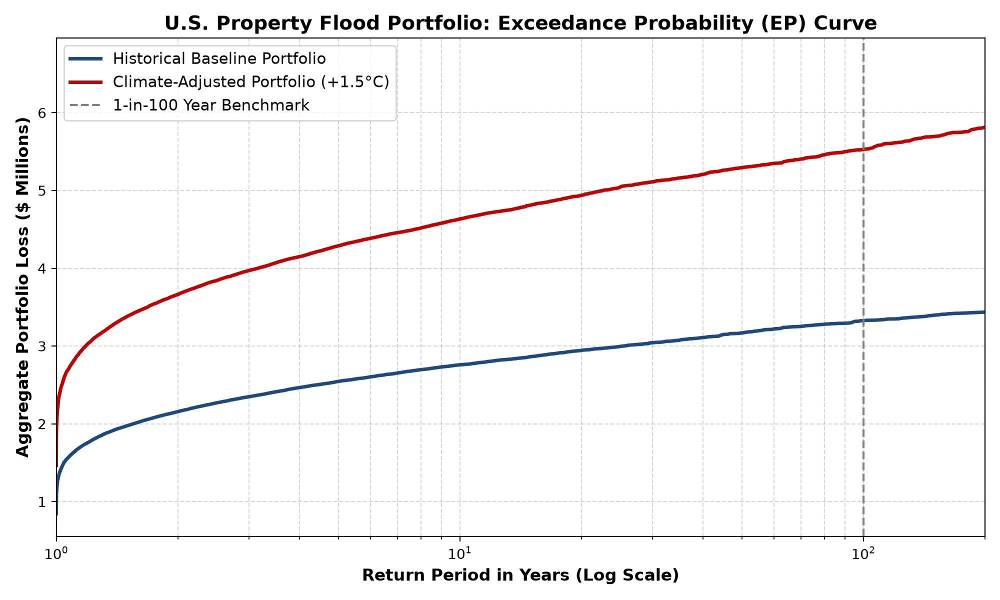

Historical Pure Premium
$2,185,504
Climate-Adjusted Pure Premium
$3,708,578
Portfolio Rate Inadequacy
+69.7%
Climate 1-in-100 PML
$5,525,681
Key Findings
- The climate-adjusted pure premium exceeds the historical baseline by approximately 69.7%.
- Expected tail losses materially increase under climate-impacted scenarios.
- The output data set supports actuarial stress testing across 50 U.S. states.
Exceedance Curve
